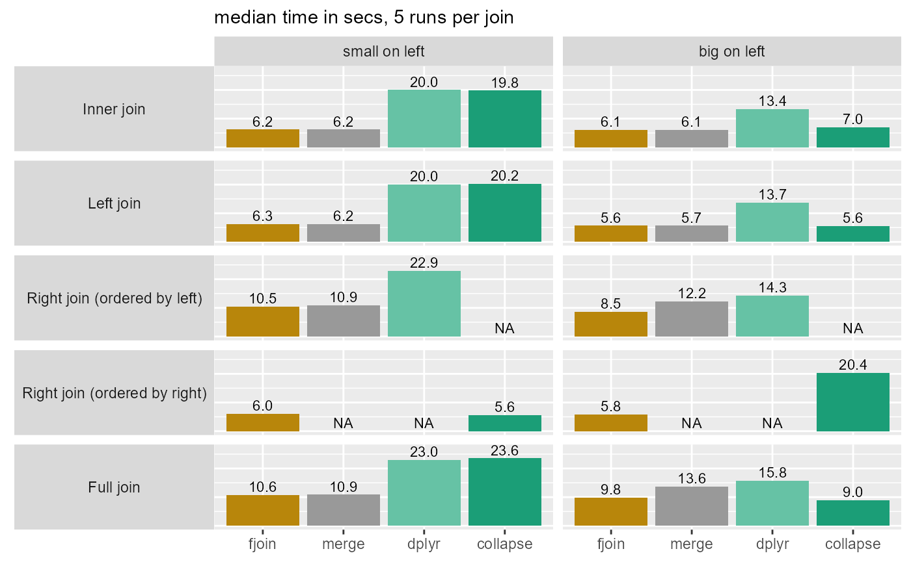
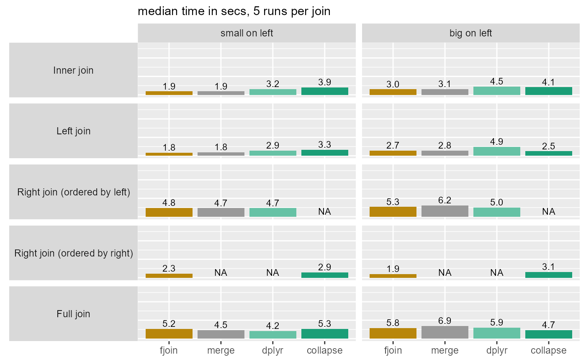
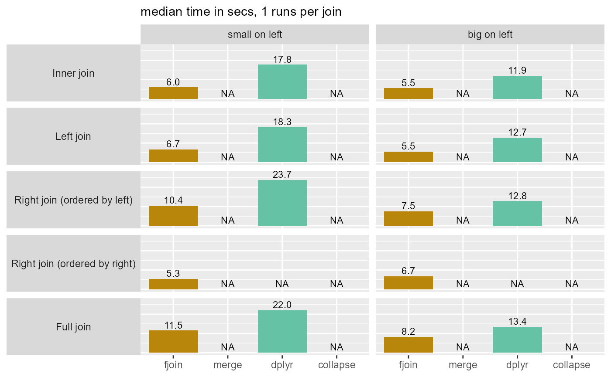
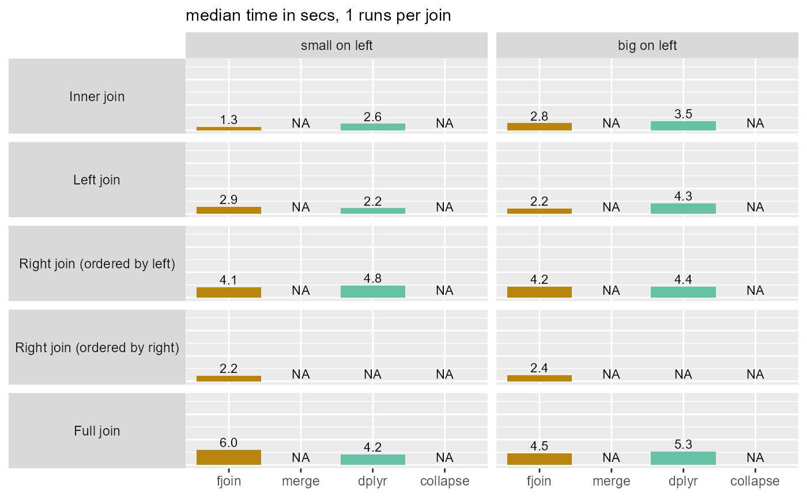

Performance check of fjoin against merge.data.table, dplyr, collapse
Source:vignettes/fjoin-performance.Rmd
fjoin-performance.RmdThis exercise checks the performance of fjoin against data.table merge()
(i.e. merge.data.table), dplyr, and collapse
on simple equality joins with moderately large laptop-size data. It does
not do justice to the much more comprehensive join functionality offered
by fjoin and dplyr compared with the other two.
Description
The setup consists of two data.tables, one “big”
(>4GB, 100M rows) and one “small” (100K rows), joined by equality on
a single integer column. The test covers the four true joins (inner,
left, right, full), swapping the argument positions of the big and small
tables. Both tables are randomly ordered in the first set of runs, and
keyed in the second. All solutions are tested with like-for-like
arguments.
The exercise is then repeated for the case where there are missing values in the join column on each side, which must not be treated as matches (but whose rows must be retained in the result where appropriate). This comparison is limited to fjoin and dplyr, which are the only two supporting this option.
Details plus version and system information are at the bottom of this note.
Results
1a: No missing values, tables unordered

| solution | total_secs |
|---|---|
| fjoin | 44.7 |
| merge | 48.7 |
| dplyr | 105.8 |
| collapse | 85.1 |
| NB: Total is sum of median times for inner, left, and full joins. Right joins excluded as not comparable. |
1b: No missing values, both tables keyed

| solution | total_secs |
|---|---|
| fjoin | 20.4 |
| merge | 21.1 |
| dplyr | 25.6 |
| collapse | 23.8 |
| NB: Total is sum of median times for inner, left, and full joins. Right joins excluded as not comparable. |
2a: Missing values (matches disallowed), tables unordered

| solution | total_secs |
|---|---|
| fjoin | 43.4 |
| merge | NA |
| dplyr | 96.2 |
| collapse | NA |
| NB: Total is sum of median times for inner, left, and full joins. Right joins excluded for comparability with the previous scenario. |
2b: Missing values (matches disallowed), both tables keyed

| solution | total_secs |
|---|---|
| fjoin | 19.7 |
| merge | NA |
| dplyr | 22.1 |
| collapse | NA |
| NB: Total is sum of median times for inner, left, and full joins. Right joins excluded for comparability with the previous scenario. |
Main observations
fjoin is the fastest solution overall (while dplyr is the least fast), and is never appreciably slower than another solution in any of the ~40 joins considered.
Its performance on inner and left joins is identical to
merge.data.table()(where comparison is possible) since both use equivalent and straightforward data.table code. However, it is faster for right and full joins when the cost of the join is large, because it avoids recomputing it to obtain the anti-join of the right table.These two data.table solutions are much more robust to switching the order of the tables than collapse and dplyr.
When the data are ordered, the differences among the solutions are negligible: they are all fast.
Disallowing
NAmatches is fast (this is the case for dplyr also). (Timings are also affected by the smaller size of the join result when missing values are introduced and excluded.)
Setup details
Data
- Two tables, each with an integer join column
idand other columns numeric.-
big: 100M rows, 6 columns, size 4.1GB -
small: 100K rows, 3 columns, size 2MB
-
- The cardinality is M:1 from
bigtosmall. Both tables have 100K distinct values ofid. Insmallthese are unique while inbigeachidis present 1K times. - In each table 90% of the distinct
ids (and hence of the rows) have a match in the other table. - Initially both tables are randomly ordered and there are no missing
ids in either table. In scenarios with missingids, 5% of the values ofidin each table areNA.
Solutions
All solutions are tested with like-for-like arguments, suspending any differences in their defaults:
- no cardinality checks
(
dplyr::*_join(..., relationship = "many-to-many")) - no post-join sorting (
merge(..., sort = FALSE)) - no tests for
NA/NaNvalues (fjoin::fjoin_*(..., match.na = TRUE)) - multiple matches accepted
(
collapse::join(..., multiple = TRUE))
In the scenario with missing values, the dplyr solutions are run with the further argument
na.matches = "never", while fjoin is run on default arguments, which exclude
such matches.